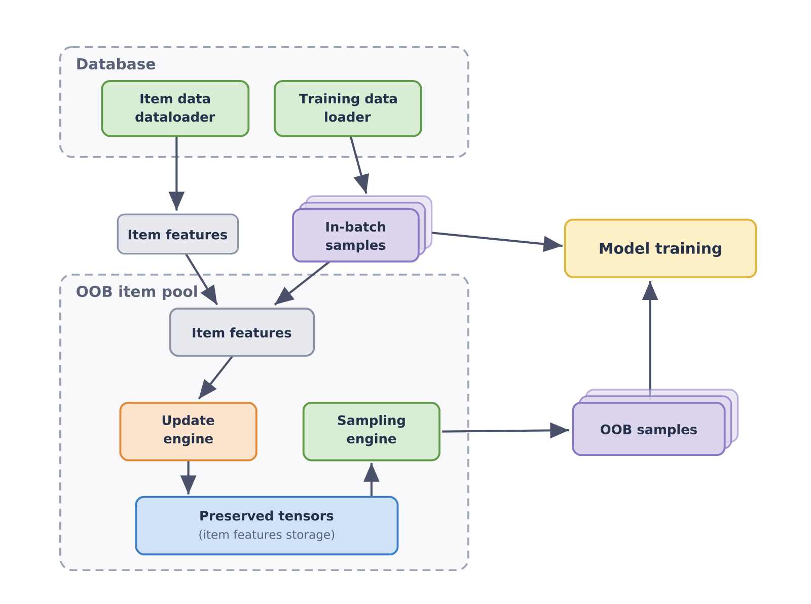
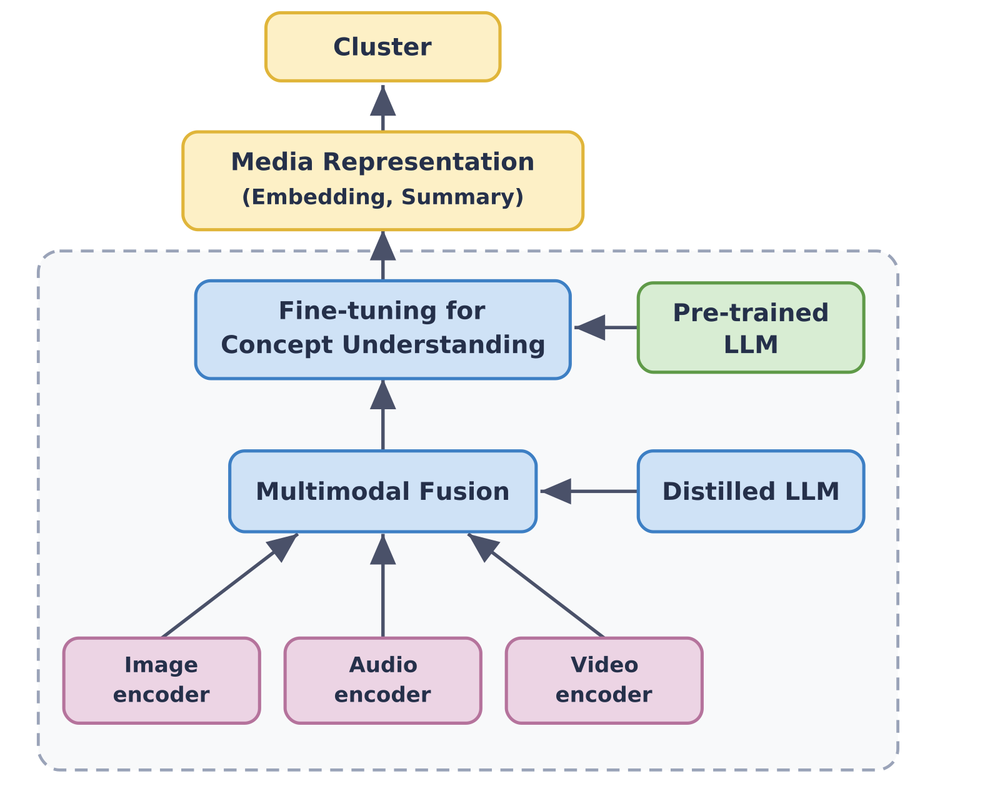
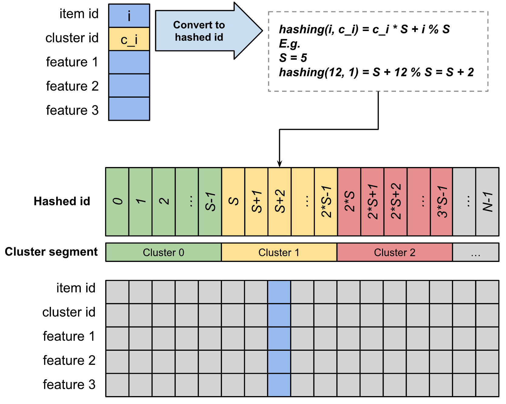
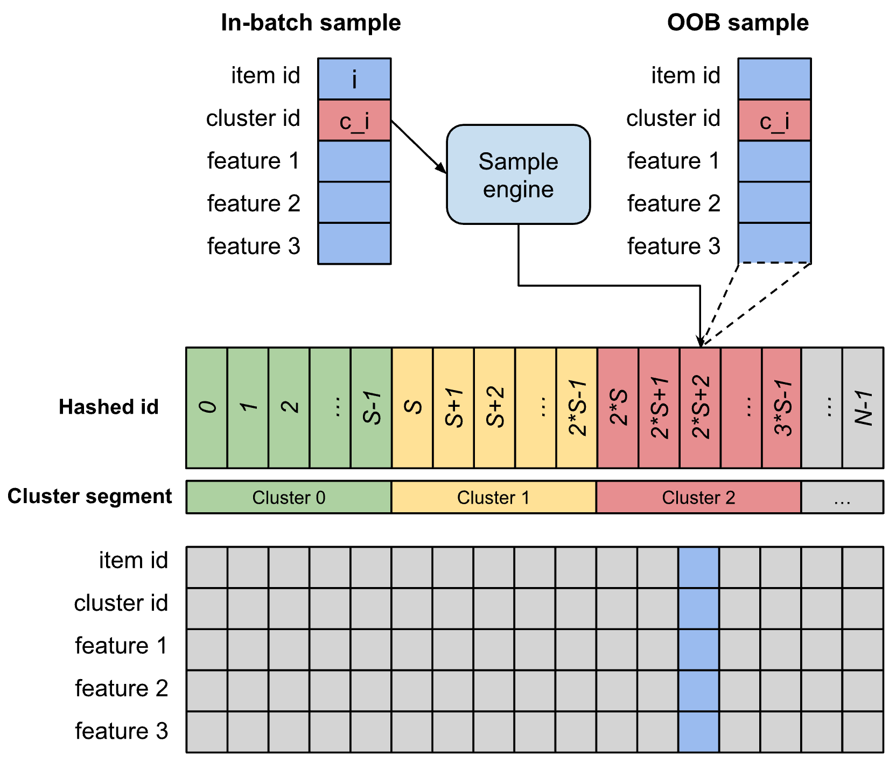
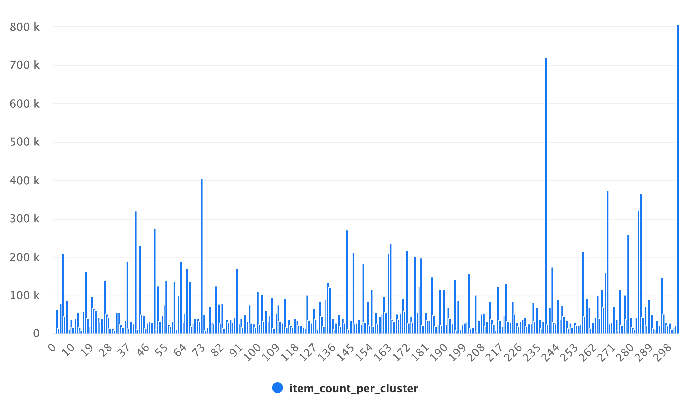
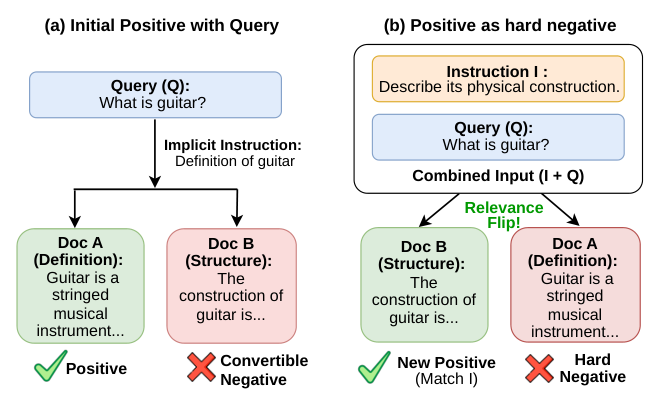

目录 · 9 节
1它到底在解决什么问题？2整体流程：先聚簇，再从同一簇里抽负样本3为什么同一簇里的负样本更有用？4簇从哪来？为什么用 LLM 做的内容向量？5实时物品池：怎么在流式训练里按簇取负样本？6实验结果说明了什么？7我认为它的局限8一个推荐团队可以怎么试9总评做双塔召回的团队值得读这篇。它解决的是一个很老、但在工业系统里一直没解决好的问题：双塔训练时的负样本太容易，模型很快就学不到东西了。已有的难负样本方法要么得给全库打分，要么得维护一个全局近邻索引，大规模流式训练里用不起。核心思想一句话：先把物品按内容聚成几百个簇，训练时从正样本所在的同一个簇里随机抽负样本，并用一个按簇分段的内存物品池把这件事做成实时的。论文来自 Meta，发表在 RecSys 2026 的在线与自适应推荐 workshop。在一个月活约一亿的社交应用里，这个召回源的 CTR 相对提升 53%，全系统 CTR 提升 6.5%，训练吞吐只降了 1.4%。头部 100 个物品占的曝光从 50% 降到 32%。公开数据集上，Amazon-Electronics 的 HR@50 从 0.0084 提到 0.0131。
它到底在解决什么问题？
先看一个示意场景。一个用户在内容发现页点开了一篇露营装备的帖子，这条点击是正样本。训练双塔时，模型要学会让这个用户的 embedding 离这篇帖子近、离别的帖子远。问题在于“别的帖子”从哪来。
| 负样本来源（示意） | 抽到的帖子 | 和露营帖的相似度 | 模型能学到什么 |
|---|---|---|---|
| 同一 batch 里别的用户点过的帖子 | 一段猫的视频、一条足球集锦 | 很低 | 几乎什么都学不到，本来就分得开 |
| 全库随机抽 | 一篇菜谱、一条手机评测 | 很低 | 同上 |
| 同一个内容簇里随机抽 | 另一篇帐篷测评、一篇徒步路线 | 较高 | 要分清这个用户喜欢哪一类露营内容 |
前两行是工业界最常用的做法。in-batch 负采样几乎不花额外计算，但负样本的范围被 batch 大小限死了。out-of-batch（下文简称 OOB）负采样覆盖面更广，训练时看到的候选也更接近线上要面对的全库。可是全库随机抽到的物品，大多和用户的兴趣毫无关系。论文的判断是，随机 OOB 负样本对模型来说太容易，物品池越大越多样，这个问题越严重。
已有的难负样本方法确实能抽到更像正样本的负样本。DNS（Dynamic Negative Sampling）用当前模型给候选打分，挑分数最高、但用户没有点的物品。ANCE 给全库建一个近似最近邻索引，训练中异步刷新，取离 query 最近的物品当负样本。这两种方法要么每步都要给大量候选打分，要么要不停重建全库索引，论文认为这类计算成本是它们没能在大规模工业系统里普及的原因。
还有一个问题和负样本连在一起：热门偏置。召回模型用点击当正样本，而用户能点到什么，又取决于系统给他展示了什么。热门物品曝光多、点击多、被当成正样本的次数多，下一轮又被推得更多。论文的线上应用里，可推荐的帖子有几千万条，头部 100 个物品却占了大约一半的曝光。
整体流程：先聚簇，再从同一簇里抽负样本
整个方案分成离线和训练时两部分，可以先看这张表。
| 部分 | 什么时候做 | 输入 | 输出 |
|---|---|---|---|
| 内容 embedding | 离线，物品入库时 | 物品的文本、图片、音频、视频 | 每个物品一个固定长度的内容向量 |
| 聚簇 | 离线 k-means；新物品上线时分配到最近的簇中心 | 内容向量 | 每个物品一个簇编号 |
| 物品池更新 | 训练中，每个 batch | batch 里物品的 ID、簇编号和特征 | 物品池里对应位置被覆盖成最新物品 |
| 簇内采样 | 训练中，每个 batch | batch 里正样本的簇编号 | 从同簇位置随机取出的负样本 |
| 训练 | 训练中 | 正样本、in-batch 负样本、随机 OOB 负样本、同簇负样本 | 更新后的双塔参数 |
关键分工是：内容模型只负责把物品分好组，它不进线上召回的推理路径。线上服务时仍然是原来的双塔加近邻检索，推理吞吐没有变化。

论文把不分簇、在物品池里均匀随机抽的版本叫 GOOBS（Global Out-of-Batch Sampling，全局 OOB 采样），把加上同簇负样本的版本叫 Cluster GOOBS。下面拆开讲。
为什么同一簇里的负样本更有用？
双塔训练通常把召回当成一个超大的多分类问题：给定用户，在所有物品里预测他点的是哪一个。全库做 softmax 太贵，就只在正样本和抽出来的 K 个负样本上算：
这里 是用户， 是他点过的物品， 是第 k 个负样本， 是用户塔和物品塔输出向量的内积。直觉是：分子要大，分母里负样本的那几项要小。
论文的解释从梯度入手。一个负样本对用户向量的梯度，大小和 成正比。用一个能手算的例子（示意）：正样本得分 5。随机抽来的负样本离用户很远，得分 0；同簇抽来的负样本内容相近，得分 4。
- 只有随机负样本时，它在 softmax 里分到的概率是 。
- 只有同簇负样本时，它分到的概率是 。
这份概率正是损失对这个负样本得分的导数，所以在得分这一层，同簇负样本收到的更新信号大了将近 40 倍。落到用户向量上，还要再乘以这个负样本自己的物品向量，但量级上的差距主要来自这份概率。随机负样本的梯度接近 0，训练步数花了，模型却几乎没动。同簇负样本落在模型当前的分界线附近，逼着模型去学同一类内容里的细微差别，而不是只学“露营和猫视频不一样”这种早就学会的区分。论文指出这和 ANCE 的理论结论一致：离 query 更近的负样本梯度更大。
同一个分析也预示了一个坑。同簇负样本的梯度大，每个正样本配太多个，就会让这部分损失压过其他部分，训练变得不稳定。论文把每个正样本配的同簇负样本从 1 个调到 64 个，发现少量最好，数量多了效果反而变差。公开实验里，同簇负样本和随机 OOB 负样本的比例是 MovieLens-1M 上 1:15、Amazon 上 1:31，也就是说大部分负样本仍是随机抽的，同簇的只占一小部分。
簇从哪来？为什么用 LLM 做的内容向量？
簇分得好不好，直接决定同簇负样本是不是真的“像”。传统做法用类目或体裁当簇。论文的线上应用改用一个内部的多模态内容 embedding 模型：在预训练 LLM 上接文本、图片、音频、视频几类 encoder，把每个物品编码成固定长度的向量，再针对具体任务微调。

有了向量，用 k-means 聚簇，每个物品归到最近的簇中心，新物品编码后在线分配。这样同一簇里的物品是内容上真正相近的，而不只是挂在同一个类目下。
簇的数量是一个要权衡的超参。簇分得太细，同簇里的物品和正样本几乎一样，很可能用户其实也喜欢，抽来当负样本就成了假负样本。簇分得太粗，同簇物品又不够像，负样本不够难。论文离线把簇数从 100 扫到 10,000，发现 250 到 500 之间最平衡，所以线上用了 300 个簇。这样分下来，98% 的簇有至少一万个物品，说明簇不算细，假负样本的风险可控。
为什么不太担心假负样本？论文给了一个估算：一个用户真正感兴趣的物品最多几千个，而全库有几十亿；一个簇里有上万个物品，其中对这个用户真正相关的比例远低于 1%。再加上每步是随机抽，偶尔抽到的相关物品也会分散到不同训练步里。这是论文的估算，不是实测的假负样本比例。
实时物品池：怎么在流式训练里按簇取负样本？
光有簇编号还不够。训练数据是持续流入的，物品池要跟着更新，采样还不能拖慢训练。论文的做法是在内存里维护一个固定大小的物品池，按簇分段。
物品池由很多个位置（论文叫 slot）组成，每个位置存一个物品的全部特征。池子按簇切成段，每个簇一段，每段的位置数相同，记为 S。这样“从某个簇里抽一个物品”就变成“在某一段里随机挑一个位置”，不需要任何索引。
写入是这样做的：每来一个训练 batch，对 batch 里的每个物品，先查它的簇编号 c，再算位置：
用一个手算例子（示意）：每段 4 个位置，某物品 ID 是 1234、簇编号 7，它写到 号位置。两个物品算出同一个位置时，后来的直接覆盖先来的。论文说这是有意的设计：池子会一直被最近出现的物品刷新，内存占用也固定。

采样也一样简单：对 batch 里的每个正样本，拿它的簇编号 c，在 0 到 S 之间随机取一个数 r，把 号位置上的物品取出来当负样本。接着上面的例子，正样本在簇 7，随机取到 r=1，就取 29 号位置上的物品。按论文 3.2 节的损失公式，每个正样本的分母里放的是它自己抽到的这几个负样本，再加上 in-batch 和随机 OOB 负样本。这些负样本具体怎样和 batch 内样本拼成一次计算，论文只写到“和 batch 内样本合在一起训练”这一步。

训练刚开始时池子是空的，按簇取很可能取不到物品。论文的处理是开训前用一张由历史训练数据整理出的物品表把池子预先填满。这些数据比最新的训练数据稍旧，但随着训练进行，batch 里的新物品会不断覆盖进来，池子就保持新鲜。
为什么这个设计便宜？写入和采样都只是查簇编号、算一个下标、读写一块内存，不需要给候选打分，也不需要重建近邻索引。线上实验里，训练吞吐只降了 1.4%。
实验结果说明了什么？
公开数据集
这组实验要回答的是：在同一个双塔模型上，只换负采样方法，簇内负采样是不是比已有方法都好。数据集是 MovieLens-1M 和 Amazon Reviews 的 Grocery、Electronics、Home 三个子集。按时间排序，前 80% 训练、后 20% 测试；评分 1–2 当负样本，3–5 当正样本。评测时目标物品要和全库所有物品一起排序，不做 k-core 过滤，也不只从 100 个随机负样本里排。所以绝对数值偏低，但更接近真实的稀疏场景。
有一点要先说清：公开数据集上的簇用的是数据集自带的类目或体裁，不是 LLM 聚出来的簇。论文的理由是这些数据集只有几万到几十万个物品、每个物品只有标题和少量属性，LLM 聚簇基本只会还原已有类目。作者明确说不声称 LLM 簇在公开数据上比类目好。所以这组实验检验的是“同簇抽负样本”这个机制本身。
六种方法都在同一个双塔上实现。基线是 in-batch 负采样加 LogQ 修正，并屏蔽掉 batch 里其实是已知正样本的负样本。其余是 DNS、CBNS（Cross-Batch Negative Sampling，缓存最近几个 batch 的物品 embedding 拿来当负样本）、ANCE、GOOBS 和 Cluster GOOBS。
| 数据集 | 指标 | 基线 | DNS | CBNS | ANCE | GOOBS | Cluster GOOBS |
|---|---|---|---|---|---|---|---|
| MovieLens-1M | HR@50 | 0.2253 | 0.2298 | 0.2331 | 0.2380 | 0.2346 | 0.2415（+7.2%） |
| MovieLens-1M | HR@100 | 0.3588 | 0.3618 | 0.3608 | 0.3661 | 0.3611 | 0.3682（+2.7%） |
| Amazon-Grocery | HR@50 | 0.0254 | 0.0261 | 0.0271 | 0.0288 | 0.0279 | 0.0301（+18.5%） |
| Amazon-Electronics | HR@50 | 0.0084 | 0.0090 | 0.0099 | 0.0108 | 0.0110 | 0.0131（+55.6%） |
| Amazon-Electronics | HR@100 | 0.0154 | 0.0163 | 0.0176 | 0.0186 | 0.0190 | 0.0201（+30.2%） |
| Amazon-Home | HR@50 | 0.0050 | 0.0054 | 0.0061 | 0.0065 | 0.0067 | 0.0074（+47.3%） |
（数字来自论文表 1，括号里是相对基线的提升；表中略去了 Grocery 和 Home 的 HR@100 两行，Cluster GOOBS 在这两行同样最好，分别为 +15.7% 和 +42.3%。）
这张表可以读出三件事。
第一，只是把负样本范围扩大到 batch 之外，就已经有用。GOOBS 什么难负样本都不挑，HR@50 相对基线就提升了 4.2% 到 34.2%。这说明训练时见到更大范围的物品，本身就能让模型泛化得更好。
第二，在随机 OOB 之外再加少量同簇负样本，在每个数据集、每个指标上都是最好的，包括要维护全局近邻索引的 ANCE。差距在稀疏的 Amazon 数据上最大：Electronics 上 Cluster GOOBS 的 HR@50 提升 55.6%，ANCE 是 28.6%。这说明在物品多、交互稀的数据上，按内容分组抽出来的负样本比按当前模型向量找出来的近邻更管用。
第三，HR@50 的提升普遍比 HR@100 大。论文据此认为，同簇负样本主要帮模型把最相关的物品排到召回列表最前面，而这正是后续排序阶段最依赖的部分。
线上 A/B 实验
线上实验要回答的是：换成 LLM 聚出来的簇、放到真实流量上，效果还在不在。应用是一个月活约一亿的社交应用的内容发现入口，可推荐的帖子有几千万条，模型用几十亿条交互训练。对照组和实验组各随机分 3% 用户，跑了 14 天。两组用同一个双塔结构，对照组用 GOOBS，实验组用 Cluster GOOBS。注意对照组已经用了 OOB 负采样，所以这里比的只是“有没有同簇负样本”。
| 模型 | 该召回源 CTR | 全系统 CTR | 训练吞吐 | 曝光 ≥1K 的物品数 | 头部 100 物品曝光占比 |
|---|---|---|---|---|---|
| GOOBS（对照） | 0% | 0% | 0% | 0% | 50% |
| Cluster GOOBS（实验） | +53% | +6.5% | −1.4% | +50% | 32% |
（数字来自论文表 2 和表 3，CTR、吞吐和物品数都是相对对照组的变化。）
系统有多个召回源，这个模型是其中流量最大的之一。它自己出的那部分曝光，CTR 相对提升 53%（p<0.01）。因为它占的流量大，全系统 CTR 也提升了 6.5%。对做召回的人来说，全系统的 6.5% 比单源的 53% 更能说明问题，因为单个召回源的 CTR 还会受到它和其他召回源怎么分流量的影响。训练吞吐降了 1.4%，推理吞吐没有变化，因为线上推理路径根本没改。
热门偏置的变化更有意思。论文把过去一天曝光至少 1,000 次的物品算作一组，实验组里这组物品的数量增加了约 50%，头部 100 个物品占的曝光从 50% 降到 32%。这说明同簇负样本让模型不再只靠“热门”这个粗信号区分物品，曝光被分给了更多物品。

我认为它的局限
第一，LLM 聚簇本身的贡献没有被单独验证。公开实验用的是类目，线上实验比的是“有同簇负样本”和“没有同簇负样本”，两处都没有“LLM 簇对比类目簇”的对照。所以 53% 的提升里有多少来自 LLM 内容向量、有多少换成现成类目也能拿到，从论文里看不出来。对没有多模态内容模型的团队，这恰恰是最想知道的。
第二，公开数据上的绝对数值很小，也没有方差。Amazon-Home 的 HR@50 从 0.0050 到 0.0074，相对提升 47.3%，绝对值只多了 0.0024。表 1 只列了单次结果，看不到多次运行的标准差或显著性，这么小的绝对值上，几十个百分点的相对差距有多稳定，读者没法判断。
第三，关键超参只给了方向。每个正样本配几个同簇负样本，论文只说“少量最好、1 到 64 里越多越差”，具体最佳值和线上用的比例都不知道。完整的模型结构、特征和训练超参也因为保密不公开，想复现线上结果只能自己重新调。
一个推荐团队可以怎么试
- 先用现成的类目当簇，在离线双塔训练里把一小部分随机负样本换成同簇负样本，比例从论文的 1:15 或 1:31 起步。这一步几乎不用改训练框架，看召回 HR 有没有提升，同时盯住训练曲线是否稳定。
- 有效的话，再扫同簇负样本的个数和簇的粒度。论文的经验是同簇负样本要少放，簇数在几百个左右最平衡，但最佳值和物品库大小有关，要自己扫。
- 训练框架是流式的，再实现按簇分段的物品池。它的写入和采样都只是算下标，实现难度不高，判断成败看训练吞吐降了多少。
- 最后才考虑换成内容 embedding 聚出来的簇，并且一定要和类目簇做一组对照，这样才能知道多出来的效果是不是值得多一个内容模型的成本。
总评
这篇论文最实用的地方，是把“难负样本”从一个要额外打分、要建索引的问题，变成了一个查簇编号、算下标的问题，成本低到可以直接放进流式训练。
| 维度 | 评价 |
|---|---|
| 问题重要性 | 高。负样本太容易和热门偏置是几乎所有双塔召回都会碰到的问题 |
| 方法创新性 | 中。同簇采样的想法不新，新的是按簇分段、覆盖写入的物品池，让它能实时跑起来 |
| 实验证据 | 中。公开数据四个集上全部最好，线上 14 天 A/B 显著；但 LLM 聚簇没有单独对照，公开结果没有方差 |
| 工程成本 | 低到中。训练吞吐只降 1.4%，推理不变；用 LLM 内容向量聚簇的话需要额外的内容模型 |
| 是否值得尝试 | 值得。先用类目簇做离线验证，成本很低 |
读完这篇，你觉得
夜读鸮记下了，谢谢你的反馈。
点一下即可，无需登录；再点一次撤回。只统计匿名次数，不记录你是谁。
相关论文RELATED
- Personalization · 2026-10-29Exploratory creative pre-ranking: Hierarchical empirical-Bayes Thompson sampling for real-time creative optimizationAI 生成内容让广告主很容易做出大量素材，但每张分到的曝光很少。Roblox 这篇在召回和精排之间加了一层素材粗排：把新素材所属计划、游戏和目标人群的历史游玩率 μ 当先验均值，先验强度 κ 这样定：同组素材游玩率按曝光加权的离散程度，减掉曝光太少带来的抽样噪声，剩下的方差记为 σ²，κ 等于 μ(1−μ)/σ² 再减一，差异越小 κ 越大；再加上素材自己的游玩和未游玩次数得到 Beta 后验，从中随机抽一个分数排序。数据少时借来的经验主导，数据多了让位给素材自己。回放线上流量，它让精排预估的游玩率提升 8.14%，同数量随机候选只提升 2.80%，链路耗时只多 0.2%，已全量上线。

Retrieval · 2026-10-29Natural Hard-Negative Mining from Positives for Instruction-Following Retrieval带指令的检索要求同一个 query 在不同指令下排出不同结果：指令加了一条额外要求后，原来的正例如果不满足这条要求，就该往后排。这种训练数据很少，现有做法是固定正例，再让大模型编一段违反指令的负例。这篇论文反过来做：从原有负例里挑一篇满足某个额外条件的文档，生成一句短指令把它扶正，原来的正例在这句指令下自然成了最难的负例。在 MS MARCO 上只造了 6,716 条数据，小号的 Qwen3-Embedding 训练后，在 InstructIR 上，同一 query 配上多条不同用户指令，取排得最差那次的前十名 nDCG，这个分数从 49.29 升到 67.06，超过大十倍以上的 Promptriever。 Retrieval · 2026-10-28CA-HNM: Constraint-Aware Hard Negative Mining for Dense Retrieval with Structured Domain Models训练稠密检索时，难负例一般取检索排在前面、但没被标成正例的文档，可排得靠前只说明它和 query 像，说明不了它为什么不该被召回。CA-HNM 借助课程知识图谱查每个候选错在哪：讲的知识点不对、范围偏了或难度级别对不上，只把这类冲突明确的候选留作负例。和同样检索位置取负例、但不看图谱的对照相比，它在多数设置下效果更好；可在一个数据集上把图谱关系随机打乱，NDCG@10 反而从 0.0311 升到 0.1174，图谱到底帮了多少还要打个问号。
Retrieval · 2026-10-28CA-HNM: Constraint-Aware Hard Negative Mining for Dense Retrieval with Structured Domain Models训练稠密检索时，难负例一般取检索排在前面、但没被标成正例的文档，可排得靠前只说明它和 query 像，说明不了它为什么不该被召回。CA-HNM 借助课程知识图谱查每个候选错在哪：讲的知识点不对、范围偏了或难度级别对不上，只把这类冲突明确的候选留作负例。和同样检索位置取负例、但不看图谱的对照相比，它在多数设置下效果更好；可在一个数据集上把图谱关系随机打乱，NDCG@10 反而从 0.0311 升到 0.1174，图谱到底帮了多少还要打个问号。 Personalization · 2026-10-21FLMNet: Self-Ensemble Distillation from Masks to Seeds for Single-Tower CTR Prediction点击率模型常靠多次随机预测教自己，本文把这种训练改成可计算的分歧惩罚。门控只读取未遮挡的原始特征，让随机遮挡造成的预测差异可以直接估算。五个基准中，蒸馏版在 Criteo 的 AUC 达到 0.8169。
Personalization · 2026-10-21FLMNet: Self-Ensemble Distillation from Masks to Seeds for Single-Tower CTR Prediction点击率模型常靠多次随机预测教自己，本文把这种训练改成可计算的分歧惩罚。门控只读取未遮挡的原始特征，让随机遮挡造成的预测差异可以直接估算。五个基准中，蒸馏版在 Criteo 的 AUC 达到 0.8169。
讨论
欢迎补充实验细节、复现经验或不同看法。需 GitHub 登录。
正在加载讨论…